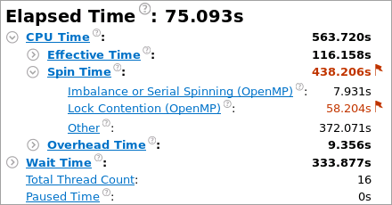
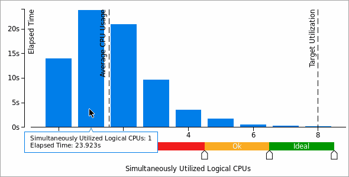
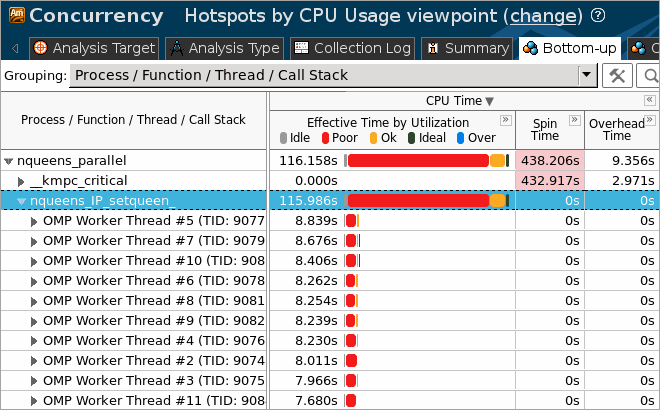
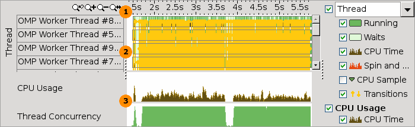

When the sample application exits, the
Intel® VTune™ Amplifier
finalizes the results and opens the
Hotspots by CPU
Usage viewpoint where each window or pane is configured to display
data on application parallelism and usage of processor cores. To interpret the
data on the sample code performance, do the following:
When the sample application exits, the
Intel® VTune™ Amplifier
finalizes the results and opens the
Hotspots by CPU
Usage viewpoint where each window or pane is configured to display
data on application parallelism and usage of processor cores. To interpret the
data on the sample code performance, do the following:
Note
The screenshots and execution time data provided in this tutorial are created on a system with 4 CPU cores. Your data may vary depending on the number and type of CPU cores on your system.
Explore Application-level Concurrency
Start analysis with the
Summary window that opens by default when data collection
completes. To interpret the data, hover over the question mark icons
 to read the pop-up help and
better understand what each performance metric means.
to read the pop-up help and
better understand what each performance metric means.
You see that after optimization, the Elapsed time has increased from 80.402 seconds to 75.093 seconds.

Note
The Concurrency analysis adds an overhead to the application execution. The overhead often depends on the number of threads and synchronization objects used in the application. This is the reason why Elapsed time data provided in the Summary window may differ from the data reported after the application launch outside of the VTune Amplifier.
The CPU Usage Histogram shows that the average concurrency level of the sample application is about 2 while the target concurrency level for this application on the 4-core system is 8. If you hover over the highest bar, you see that this application has run 1 threads for almost 24 seconds, which is categorized by the VTune Amplifier as Poor processor utilization on this system.

Identify the Most Time-consuming Function
Click the Bottom-up tab to switch to the Bottom-up window and analyze application performance by function. By default, the grid is sorted by the CPU Time metric in the descending order. Select the Process/Function/Thread/Call Stack grouping level from the Grouping menu. This granularity enables you to visualize threads where the hotspots functions were executed.
After initial optimization, the
nqueens_IP_setqueen function is still
a bottleneck. Click the arrow sign
 at the
nqueens_IP_setqueen function. You see
that this function's execution was parallelized among fifteen threads.
at the
nqueens_IP_setqueen function. You see
that this function's execution was parallelized among fifteen threads.

Select these threads in the grid, right-click and choose the Filter In by Selection context menu option. The Timeline pane below is updated to display data for the selected threads only.

|
Timeline area. When you hover over the graph element, the timeline tooltip displays the time passed since the application has been launched. |
|
Threads area that shows the distribution of CPU time utilization per thread. Hover over a bar to see the CPU time utilization in percent for this thread at each moment of time. Dark green zones show the time threads are active. Light-green zones show the time threads were waiting. |
|
Performance metric area that shows application performance over time by a performance metric. In the Hotspots by CPU Usage viewpoint, CPU Usage and Thread Concurrency metrics are used. The CPU Usage chart shows the distribution of CPU time utilization for the whole application. Hover over a bar to see the application-level CPU time utilization in percent at the particular moment. VTune Amplifier calculates the overall CPU Usage metric as the sum of CPU time per each thread of the Threads area. Maximum CPU Usage value is equal to [number of processor cores] x 100%. The Thread Concurrency chart shows the application-level thread concurrency at each moment of time. Hover over a bar to see an exact concurrency level at the particular moment. Transitions. The execution flow between threads where one thread signals to another thread waiting to receive that signal. You may zoom in to a time region to get more detailed view of the transitions. To do this, drag and drop to select the region and right-click to select the Zoom In on Selection option from the context menu. |
The Timeline pane for the sample application shows a large number of transitions between threads, which means that the threads spent noticeable time transferring execution to each other. If you uncheck the Transitions display option on the right, you see that workload balance is also poor since many of the threads were waiting for OMP Worker Thread #7 to complete execution.
Run the Locks and Waits analysis to understand what prevents the sample code from effective thread concurrency and processor utilization.